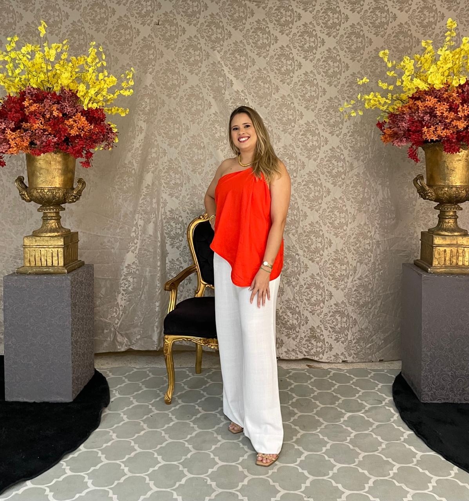

História
A professora Natanna Samilly dos Santos Almeida nasceu em 12 de outubro de 1987, na cidade de Parelhas, onde viveu toda a sua infância e adolescência. Cursou o Ensino Fundamental e o Ensino Médio na Escola Estadual Monsenhor Amâncio Ramalho.
Aos 17 anos, ingressou na universidade, onde cursou Licenciatura em Matemática pela Universidade Federal do Rio Grande do Norte (UFRN). Posteriormente, especializou-se na área de Educação Matemática. Desde o ano de 2008, reside na cidade de Caicó.
A professora iniciou sua trajetória docente aos 18 anos, atuando inicialmente com aulas de reforço, estágios e contratos temporários. Tornou-se professora efetiva da rede estadual de ensino no ano de 2012. Ao longo de sua carreira, já trabalhou na Escola Estadual Francisco Pergentino, localizada no distrito de Laginhas, onde lecionou para turmas do 6º ao 9º ano do Ensino Fundamental.
Desde 2019, atua como professora na Escola Estadual em Tempo Integral José Augusto (EETIJA), na cidade de Caicó, onde continua exercendo sua profissão com dedicação ao ensino da Matemática e à formação dos estudantes. Além da Matemática, também leciona a disciplina de Projeto de Vida, uma área pela qual possui grande afinidade e satisfação em ensinar.
Ao longo da sua carreira, trabalhou em diversas escolas e também participou de projetos sociais, levando educação a comunidades carentes.


Curiosidades
Queridos alunos
Lembrem-se sempre do significado de Carpe Diem: aproveitem cada dia como uma oportunidade para aprender, crescer e se tornar pessoas melhores. Cada aula, cada desafio e cada conquista fazem parte da construção do seu Projeto de Vida.
Acreditem em seus sonhos, valorizem o presente e nunca deixem para depois aquilo que pode transformar o seu futuro hoje.
Com dedicação e coragem, vocês são capazes de alcançar tudo aquilo que desejarem.
Com carinho, Professora Natanna